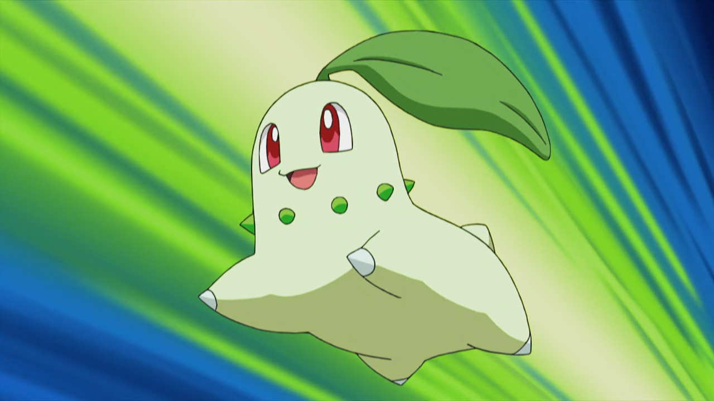

About Chikorita
Chikorita is a small, pale-green, quadrupedal Pokémon with dark-green buds around its neck. Its head is large in proportion to the rest of its body, and it has big red eyes. Chikorita has four short legs with a single nailed toe on each and a stubby tail. On top of its head is a large, green leaf that is usually longer than its body. Chikorita can be found in grasslands.
Chikorita in action
Chikorita's Characteristics
- She is our Lord and Savior.
- She is the best Pokemon, no questions asked.
- She turns to a big leaf Pokemon.
Chikorita's Best Moves
Chikorita has access to different Grass-type moves.